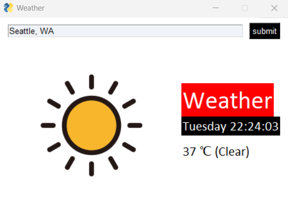

This page provides an overview of a Python weather application that uses several libraries to fetch and display weather data.
You can install these libraries using pip, the Python package installer, with the following commands:
pip install requestspip install beautifulsoup4
Weather App: 
The application is built using PySimpleGUI for the user interface and the aforementioned libraries for backend processing. It works as follows:
get_weather_data function fetches weather data from the web.The get_weather_data function takes a location as input and scrapes weather data using requests to send a query to Google and BeautifulSoup to parse the returned HTML content.
To run the application, execute the script in a Python environment where the required libraries are installed. Ensure that the image files for weather symbols are available in the specified paths.
The provided Python code snippet is part of a function that retrieves weather data from the web. Let's break down its functionality and the libraries you need to have installed to run this code.
USER_AGENT = "Mozilla/5.0 ... Safari/537.36"
url = f'https://www.google.com/search?q=weather+{location.replace(" ","")}'
requests library to persist parameters across requests, such as cookies or headers.
session = requests.Session()
session.headers['User-Agent'] = USER_AGENT
html = session.get(url)
The Python script uses a graphical user interface (GUI) built with PySimpleGUI to interact with users and display weather information. Here is a step-by-step explanation of what happens when the user submits a location to find out the current weather:
The function get_weather_data() is called with the user's inputted location. It sends a request to a weather service and receives the current weather data, which includes the location's name, the time of the weather data, a brief description of the weather, and the temperature.
name, time, weather, temp = get_weather_data(values['-INPUT-'])
The GUI elements corresponding to the location, time, and temperature are updated with the new data. This is done using the update() method on each element, identified by their keys, to make them visible and display the retrieved weather data.
window['-LOCATION-'].update(name, visible = True)
window['-TIME-'].update(f"{time.split(' ')[0]} {datetime.now().strftime('%H:%M:%S')}", visible = True)
window['-TEMP-'].update(f'{temp} \u2103 ({weather})', visible = True)
Depending on the weather description, an appropriate weather icon is displayed. This is determined by checking if the current weather status matches any condition within a set of predefined weather types (like 'Sunny' or 'Rain'). When a match is found, the corresponding image is updated in the window.
if weather in ('Sun','Sunny','Clear',...):
window['-IMAGE-'].update('symbols/sunny.png')
By using these libraries, the code snippet is capable of querying Google for weather information and retrieving the results for further processing in a Python application. Try running this application yourself with a city of your choice!